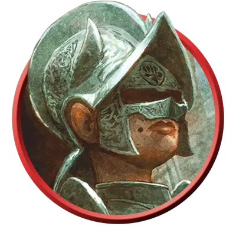

Культист Бейна
Cultist of Bane
Средний или Маленький Гуманоид, Нейтральный Злой

Класс Защиты 16 Инициатива +6 (16)
Хиты 142 (19к8 + 57)
Скорость 30 футов
| мод | спас | ||
|---|---|---|---|
| СИЛ | 18 | +4 | +4 |
| ЛОВ | 14 | +2 | +2 |
| ТЕЛ | 16 | +3 | +7 |
| мод | спас | ||
|---|---|---|---|
| ИНТ | 13 | +1 | +1 |
| МДР | 19 | +4 | +8 |
| ХАР | 15 | +2 | +6 |
Чувства пассивное Восприятие 18
Языки Общий
Опасность 9 (5 000 опыта; БВ +4)
Особенности
Смерти вопреки. Культист восстанавливает 10 Хитов в начале каждого своего хода, если он Окровавлен и у него остался хотя бы 1 Хит.
Действия
Мультиатака. Культист совершает три атаки Латной перчаткой или Подавляющим всплеском в любой комбинации. Он может заменить одну атаку использованием Сотворения заклинания, сотворяя Подчинение личности, если оно доступно.
Латная перчатка. Бросок рукопашной атаки: +8, досягаемость 5 фт. Попадание: 17 (3к8 + 4) Дробящего урона.
Подавляющий всплеск. Бросок дальнобойной атаки: +8, дистанция 120 фт. Попадание: 16 (2к10 + 5) Психического урона, и цель не может совершать Реакции до начала следующего хода культиста.
Сотворение заклинаний. Культист Бейна сотворяет одно из следующих заклинаний (заклинательная характеристика — Мудрость, Сл спасброска заклинаний 16):
2/день каждое: Обнаружение мыслей, Умиротворение
1/день: Подчинение личности
Реакции
Контратака. Условие: По культисту попадают броском атаки. Эффект: Культист совершает одну атаку Латной перчаткой или Подавляющим всплеском по вызвавшему ответ существу.
Бонус мастерства +4
Среда обитания Город
Сокровища Личные, Реликварные
Культисты
Фанатики и пророки конца
С помощью магии и сомнительных практик культисты распространяют радикальные воззрения. Пока одни втайне охотятся за оккультным знаниями, другие организуют тайные общества, стремящиеся привести мир к страшному концу.
Обычно в основе культа лежит иерархия, построенная вокруг харизматичного и властного лидера. Хотя члены культа могут действовать самостоятельно, они подчиняются указаниям от вышестоящих участников, наделённых сверхъестественными способностями. Культы могут строиться на основе любой мистической традиции, но зачастую они служат сверхъестественным силам.
Культисты Бейна сеют раздор, либо напрямую запугивая других, либо используя уже существующую власть, чтобы создавать вражду и угнетение. Многие из них — тираны, способные подчинять себе толпы приспешников, но другие предпочитают действовать из тени. Такие культисты своей властной натурой втираются в советники к благонамеренным правителям, обращая добрые организации в диктатуры, а самих лидеров — в тиранов. В знак верности они наносят на руки татуировку с символом Бейна — сжатую в кулак латную перчатку, откуда бьют лучи света.
Мёртвая Троица
Авантюристы Бейн, Баал и Миркул некогда завладели божественной силой, но за свою гордыню были убиты. Все трое возродились и ныне известны как Мёртвая Троица. Каждый из них породил зловещие культы, что следуют их путями тирании, убийства и некромантии.
Сильнее прочих богов Мёртвая Троица влияет на Фаэрун — и в особенности на город Врата Балдура — самыми пагубными способами. Культисты, получающие повеления напрямую от своего бога-покровителя, зачастую наиболее честолюбивы и опасны.
Планы культа
Культисты зачастую практикуют малоизвестные магические обряды или помешаны на трактовке древних пророчеств. В основе их веры лежит почитание сверхъестественных покровителей: божеств, потусторонних сущностей, коварных чужеродных разумов или других загадочных сил.
Совершите бросок по таблице «План культиста» для вдохновения или выберите сами заветную цель культиста.
План культиста
| 1к6 | Культист стремится… |
| 1 | Свергнуть существующий порядок, завершить эпоху или уничтожить мир. |
| 2 | Развеять лживую иллюзию привычной реальности и раскрыть забытые или ужасные истины. |
| 3 | Распространить свою веру с помощью ментального контроля и сверхъестественного принуждения. |
| 4 | Изменить географию мира, например затопить земли или пробудить вулканы. |
| 5 | Преобразовать жизнь в глобальных масштабах, изменяя тела или души других созданий. |
| 6 | Призвать своё божество или его вестника, оружие или царство в свой мир. |
Оккультные символы
Как правило, культы отождествляют себя с символами, которые воплощают их убеждения. Такие знаки можно найти на значимых для них объектах, а также на одеяниях и телах самих культистов. Они могут быть общеизвестными или иметь значение только внутри культа. Совершите два броска по таблице «Символ культа» для вдохновения или выберите сами описание знака тайного сообщества.
Символ культа
| 1к10 | Символом культа является… | Он представлен в виде… |
| 1 | Алхимический знак | Календаря или карты |
| 2 | Животное | Герба или эмблемы рода |
| 3 | Небесное тело | Сложной схемы |
| 4 | Знака божества | Метафорического образа |
| 5 | Стихия | Мистической сущности |
| 6 | Глаз | Частью уравнения |
| 7 | Геометрическая фигура | Повторяющегося узора |
| 8 | Буква или число | Ряда царапин |
| 9 | Часть чудовища | Простой пиктограммы |
| 10 | Череп | Оружия или инструмента |